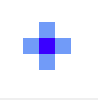
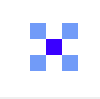
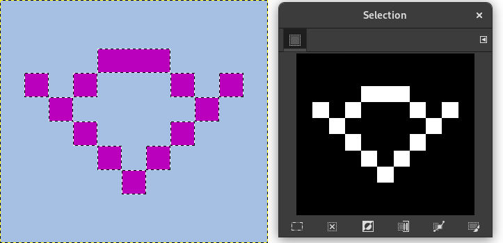
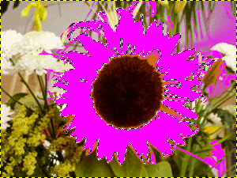

A ferramenta Seleção Contígua (Varinha Mágica) foi projetada para selecionar áreas da camada ou imagem atual com base na semelhança de cores.
Ao usar esta ferramenta, é muito importante escolher o ponto inicial correto. Se você selecionar o local errado, você pode obter algo muito diferente do que você quer, ou mesmo o oposto.
A Varinha Mágica é uma boa ferramenta para selecionar objetos com bordas bem nítidas. É divertida de usar, então iniciantes, frequentemente, começam usando-na muito. Você provavelmente vai descobrir, no entanto, que quanto mais você usá-la, mais você se torna frustrado com a dificuldade de escolher exatamente o que deseja, nem mais, nem menos. Os usuários mais experientes acham que a ferramenta de Vetores e a Seleção por Cor são muitas vezes mais eficientes, e fazem menos uso da Varinha Mágica. Ainda assim, é útil para a seleção de uma área dentro de um contorno, ou retoque de seleções imperfeitas. Muitas vezes funciona muito bem para a seleção de uma área de fundo na cor sólida (ou quase sólida).
Note que como a área selecionada se expande para fora a partir do centro, não só para se propagar por pixels que se tocam: é capaz de saltar por cima de pequenos intervalos, dependendo da opção de limiar. Para aumentar/diminuir o limiar, durante a utilização de uma seleção contígua, depois de pressionar o botão, arraste o cursor em alguma direção, sem soltar o botão. Lembre-se: isso altera temporariamente o Limiar que diz quanto parecidas as cores tem que ser — o quanto você arrasta o ponteiro com o botão pressionado não está relacionado de outra forma com o tamanho da seleção.
There are different possibilities to activate the tool:
-
A partir da imagem na barra de menu → → ,
-
Ao clicar no ícone da ferramenta: na caixa de ferramentas,
-
By pressing the U keyboard shortcut.
A ferramenta de Seleção contígua não possui modificadores de teclas especiais, apenas os que afetam todas as ferramentas de seleção da mesma forma. Veja Seção 2.1, “Características comuns” para obter ajuda.

Ela começa a seleção quando você clica em um ponto na imagem, e se expande para fora, como água se espalhando no chão, selecionando pixels contíguos cujas cores são semelhantes ao pixel de partida. Você pode controlar o limiar de similaridade, arrastando o mouse para baixo ou para a direita: quanto mais você arrastá-lo, mais você vai selecionar a região. E você pode reduzir a seleção arrastando para cima ou para a esquerda.
You can move the selection outline using Alt + arrow keys.

Normally, tool options are displayed in a window attached under the Toolbox as soon as you activate a tool. If they are not, you can access them from the main menu through → → which opens the option window of the selected tool. The available tool options can also be accessed by double clicking the corresponding tool icon in the Toolbox.
- Modo, Anti-serrilhamento, Enevoar bordas
-
![[Nota]](images/note.png)
Nota Veja Ferramentas de Seleção para obter ajuda com opções que são comuns a todas essas ferramentas. Apenas as opções que são específicas para esta ferramenta são explicadas aqui.
- Encontrando cores similares
-
Estas opções afetam a maneira como a varinha mágica expande a seleção a partir do ponto inicial.
- Seleciona áreas transparentes
-
Esta opção dá a varinha mágica a capacidade de selecionar as áreas que são completamente transparentes. Se esta opção não estiver marcada, as áreas transparentes nunca serão incluídas na seleção.
- Usar amostra combinada
-
If you enable this option, sampling is not calculated only from the values of the active layer, but from all visible layers.
For more information, see the Glossary entry.
- Linhas diagonais
-
When activated, the tool considers diagonally neighboring pixels as connected when calculating the affected area. In other words, instead of looking at the four orthogonal neighbors of each pixel, it looks at all eight pixels
Figura 14.20. Example for Diagonal Neighbors

A pixel with 4 orthogonal neighbors

A pixel with 4 diagonal neighbors

A pixel with 8 neighbors
Figura 14.21. Example for Diagonal Neighbors option applied

Diagonal Neighbors option unchecked

Diagonal Neighbors option checked
- Limiar
-
Esse controle deslizante determina a gama de cores que serão selecionadas no momento do clique no ponto inicial, antes de arrastá-lo: quanto maior o limite, maior a seleção resultante. Após pressionar o botão, arraste o cursor para baixo ou para a direita — isso vai aumentar o tamanho da seleção, e arrastar para cima ou para o lado esquerdo irá diminuir. Assim, você tem o mesmo conjunto de possibilidades, independentemente da configuração do Limiar: o que difere é a quantidade de arrastar que você tem que fazer para obter o resultado desejado.
- Selecionar por
-
Com esta opção, você pode escolher qual componente da imagem o GIMP deve usar para calcular a similaridade.
Os componentes que você pode escolher são , , , , e . com esta opção você pode escolher qual componente da imagem o GIMP deve usar para calcular a similaridade.
- Draw Mask
-
This option can help to visualize the selection. Selected areas marked with marching ants may not be evident when selecting with Fuzzy Select. If this option is checked, selected areas will be filled with a magenta color as long as you keep pressing on the left mouse button, and this mask will disappear as soon as you release this button.
Figura 14.22. Example for Draw mask option applied

Fuzzy Select used with Draw Mask option unchecked

Fuzzy Select used with Draw Mask option checked, left mouse button not released yet.